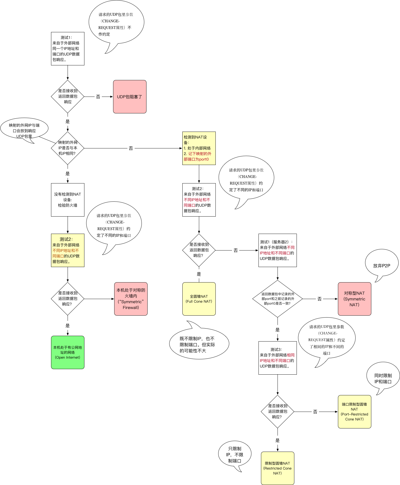

WebRTC学习
- 在任何网络环境下都能够建立网络连接，交换会话信息后，由客户端直接点对点通讯
名词解释
P2P
- Point to Point ,指数据的传输不再通过服务器，而是网络用户之间直接传递数据
NAT
- Basic NAT（Network Address Translation）
- 内网IP地址和端口向外部发送请求时（例如Socket请求），NAT设备只转换IP地址，端口保持不变 （基本淘汰）
- NAPT（Network Address/Port Translator）
- 内网IP地址和端口向外部发送请求时，NAT设备同时将IP和端口映射为外部IP地址和外部端口 （目前主流）
- STUN 协议 第五章有详细关于
NAT的分类
STUN

- Session Traversal Utilities for NAT，NAT会话穿越应用程序
- STUN 协议
- 在应用中，采取了STUN方式实现了P2P,采用了辅助的方式探测NAT的IP和端口
- 探测和发现通讯对方是否躲在防火墙或者NAT路由器后面
- 确定内网客户端所暴露在外的广域网的IP和端口以及NAT类型等信息，STUN服务器利用这些信息协助不同内网的计算机之间建立点对点的UDP通讯
TURN
- Traversal Using Relay NAT，通过中继穿透NAT
- 在复杂的NAT实现下，STUN无法穿透NAT，这时就要通过中继服务器来实现穿透
- 会占用大量的带宽资源
SDP
- SDP 完全是一种会话描述格式 ,它不属于传输协议,只使用不同的适当的传输协议
- SDP协议介绍
Signal Server
- 给客户端之间传送彼此的SDP信息和candidate信息，客户端通过这些信息建立P2P连接来传送音视频数据
业务流程

STUN/TURN
- 暂未作处理
实现Demo
客户端代码基于 flutter-webrtc 及开源的后台源码，简单作了结合，以便后期拓展；
服务器端使用的是PostgreSQL，好友列表是固定的ID，需酌情修改。只做了视频通讯，在华为手机上挂断有出现资源未释放的问题

参考
- 本文链接：https://www.wl960127.top/posts/10120/
- 版权声明：本站内容均为个人学习笔记,不涉及商业用途，仅提供学习参考,第三方摘录已署名链接,未署名请评论添加,转载署名来源即可。
分享